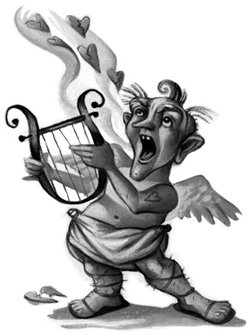

Hermione remained in the hospital wing for several weeks. There was a flurry of rumor about her disappearance when the rest of the school arrived back from their Christmas holidays, because of course everyone thought that she had been attacked. So many students filed past the hospital wing trying to catch a glimpse of her that Madam Pomfrey took out her curtains again and placed them around Hermione’s bed, to spare her the shame of being seen with a furry face.
Harry and Ron went to visit her every evening. When the new term started, they brought her each day’s homework.
“If I’d sprouted whiskers, I’d take a break from work,” said Ron, tipping a stack of books onto Hermione’s bedside table one evening.
“Don’t be silly, Ron, I’ve got to keep up,” said Hermione briskly. Her spirits were greatly improved by the fact that all the hair had gone from her face and her eyes were turning slowly back to brown. “I don’t suppose you’ve got any new leads?” she added in a whisper, so that Madam Pomfrey couldn’t hear her.
“Nothing,” said Harry gloomily.
“I was so sure it was Malfoy,” said Ron, for about the hundredth time.
“What’s that?” asked Harry, pointing to something gold sticking out from under Hermione’s pillow.
“Just a get well card,” said Hermione hastily, trying to poke it out of sight, but Ron was too quick for her. He pulled it out, flicked it open, and read aloud:
“To Miss Granger, wishing you a speedy recovery, from your concerned teacher, Professor Gilderoy Lockhart, Order of Merlin, Third Class, Honorary Member of the Dark Force Defense League, and five-time winner of Witch Weekly’s Most-Charming-Smile Award.”
Ron looked up at Hermione, disgusted.
“You sleep with this under your pillow?”
But Hermione was spared answering by Madam Pomfrey sweeping over with her evening dose of medicine.
“Is Lockhart the smarmiest bloke you’ve ever met, or what?” Ron said to Harry as they left the infirmary and started up the stairs toward Gryffindor Tower. Snape had given them so much homework, Harry thought he was likely to be in the sixth year before he finished it. Ron was just saying he wished he had asked Hermione how many rat tails you were supposed to add to a Hair-Raising Potion when an angry outburst from the floor above reached their ears.
“That’s Filch,” Harry muttered as they hurried up the stairs and paused, out of sight, listening hard.
“You don’t think someone else’s been attacked?” said Ron tensely.
They stood still, their heads inclined toward Filch’s voice, which sounded quite hysterical.
“— even more work for me! Mopping all night, like I haven’t got enough to do! No, this is the final straw, I’m going to Dumbledore —”
His footsteps receded along the out-of-sight corridor and they heard a distant door slam.
They poked their heads around the corner. Filch had clearly been manning his usual lookout post: They were once again on the spot where Mrs. Norris had been attacked. They saw at a glance what Filch had been shouting about. A great flood of water stretched over half the corridor, and it looked as though it was still seeping from under the door of Moaning Myrtle’s bathroom. Now that Filch had stopped shouting, they could hear Myrtle’s wails echoing off the bathroom walls.
“Now what’s up with her?” said Ron.
“Let’s go and see,” said Harry, and holding their robes over their ankles they stepped through the great wash of water to the door bearing its OUT OF ORDER sign, ignored it as always, and entered.
Moaning Myrtle was crying, if possible, louder and harder than ever before. She seemed to be hiding down her usual toilet. It was dark in the bathroom because the candles had been extinguished in the great rush of water that had left both walls and floor soaking wet.
“What’s up, Myrtle?” said Harry.
“Who’s that?” glugged Myrtle miserably. “Come to throw something else at me?”
Harry waded across to her stall and said, “Why would I throw something at you?”
“Don’t ask me,” Myrtle shouted, emerging with a wave of yet more water, which splashed onto the already sopping floor. “Here I am, minding my own business, and someone thinks it’s funny to throw a book at me. . . .”
“But it can’t hurt you if someone throws something at you,” said Harry, reasonably. “I mean, it’d just go right through you, wouldn’t it?”
He had said the wrong thing. Myrtle puffed herself up and shrieked, “Let’s all throw books at Myrtle, because she can’t feel it! Ten points if you can get it through her stomach! Fifty points if it goes through her head! Well, ha, ha, ha! What a lovely game, I don’t think!”
“Who threw it at you, anyway?” asked Harry.
“I don’t know. . . . I was just sitting in the U-bend, thinking about death, and it fell right through the top of my head,” said Myrtle, glaring at them. “It’s over there, it got washed out. . . .”
Harry and Ron looked under the sink where Myrtle was pointing. A small, thin book lay there. It had a shabby black cover and was as wet as everything else in the bathroom. Harry stepped forward to pick it up, but Ron suddenly flung out an arm to hold him back.
“What?” said Harry.
“Are you crazy?” said Ron. “It could be dangerous.”
“Dangerous?” said Harry, laughing. “Come off it, how could it be dangerous?”
“You’d be surprised,” said Ron, who was looking apprehensively at the book. “Some of the books the Ministry’s confiscated — Dad’s told me — there was one that burned your eyes out. And everyone who read Sonnets of a Sorcerer spoke in limericks for the rest of their lives. And some old witch in Bath had a book that you could never stop reading! You just had to wander around with your nose in it, trying to do everything one-handed. And —”
“All right, I’ve got the point,” said Harry.
The little book lay on the floor, nondescript and soggy.
“Well, we won’t find out unless we look at it,” he said, and he ducked around Ron and picked it up off the floor.
Harry saw at once that it was a diary, and the faded year on the cover told him it was fifty years old. He opened it eagerly. On the first page he could just make out the name “T. M. Riddle” in smudged ink.
“Hang on,” said Ron, who had approached cautiously and was looking over Harry’s shoulder. “I know that name. . . . T. M. Riddle got an award for special services to the school fifty years ago.”
“How on earth d’you know that?” said Harry in amazement.
“Because Filch made me polish his shield about fifty times in detention,” said Ron resentfully. “That was the one I burped slugs all over. If you’d wiped slime off a name for an hour, you’d remember it, too.”
Harry peeled the wet pages apart. They were completely blank. There wasn’t the faintest trace of writing on any of them, not even Auntie Mabel’s birthday, or dentist, half-past three.
“He never wrote in it,” said Harry, disappointed.
“I wonder why someone wanted to flush it away?” said Ron curiously.
Harry turned to the back cover of the book and saw the printed name of a variety store on Vauxhall Road, London.
“He must’ve been Muggle-born,” said Harry thoughtfully. “To have bought a diary from Vauxhall Road. . . .”
“Well, it’s not much use to you,” said Ron. He dropped his voice. “Fifty points if you can get it through Myrtle’s nose.”
Harry, however, pocketed it.
Hermione left the hospital wing, de-whiskered, tail-less, and fur-free, at the beginning of February. On her first evening back in Gryffindor Tower, Harry showed her T. M. Riddle’s diary and told her the story of how they had found it.
“Oooh, it might have hidden powers,” said Hermione enthusiastically, taking the diary and looking at it closely.
“If it has, it’s hiding them very well,” said Ron. “Maybe it’s shy. I don’t know why you don’t chuck it, Harry.”
“I wish I knew why someone did try to chuck it,” said Harry. “I wouldn’t mind knowing how Riddle got an award for special services to Hogwarts either.”
“Could’ve been anything,” said Ron. “Maybe he got thirty O.W.L.s or saved a teacher from the giant squid. Maybe he murdered Myrtle; that would’ve done everyone a favor. . . .”
But Harry could tell from the arrested look on Hermione’s face that she was thinking what he was thinking.
“What?” said Ron, looking from one to the other.
“Well, the Chamber of Secrets was opened fifty years ago, wasn’t it?” he said. “That’s what Malfoy said.”
“Yeah . . .” said Ron slowly.
“And this diary is fifty years old,” said Hermione, tapping it excitedly.
“So?”
“Oh, Ron, wake up,” snapped Hermione. “We know the person who opened the Chamber last time was expelled fifty years ago. We know T. M. Riddle got an award for special services to the school fifty years ago. Well, what if Riddle got his special award for catching the Heir of Slytherin? His diary would probably tell us everything — where the Chamber is, and how to open it, and what sort of creature lives in it — the person who’s behind the attacks this time wouldn’t want that lying around, would they?”
“That’s a brilliant theory, Hermione,” said Ron, “with just one tiny little flaw. There’s nothing written in his diary.”
But Hermione was pulling her wand out of her bag.
“It might be invisible ink!” she whispered.
She tapped the diary three times and said, “Aparecium!”
Nothing happened. Undaunted, Hermione shoved her hand back into her bag and pulled out what appeared to be a bright red eraser.
“It’s a Revealer, I got it in Diagon Alley,” she said.
She rubbed hard on January first. Nothing happened.
“I’m telling you, there’s nothing to find in there,” said Ron. “Riddle just got a diary for Christmas and couldn’t be bothered filling it in.”
Harry couldn’t explain, even to himself, why he didn’t just throw Riddle’s diary away. The fact was that even though he knew the diary was blank, he kept absentmindedly picking it up and turning the pages, as though it were a story he wanted to finish. And while Harry was sure he had never heard the name T. M. Riddle before, it still seemed to mean something to him, almost as though Riddle was a friend he’d had when he was very small, and had half-forgotten. But this was absurd. He’d never had friends before Hogwarts, Dudley had made sure of that.
Nevertheless, Harry was determined to find out more about Riddle, so next day at break, he headed for the trophy room to examine Riddle’s special award, accompanied by an interested Hermione and a thoroughly unconvinced Ron, who told them he’d seen enough of the trophy room to last him a lifetime.
Riddle’s burnished gold shield was tucked away in a corner cabinet. It didn’t carry details of why it had been given to him (“Good thing, too, or it’d be even bigger and I’d still be polishing it,” said Ron). However, they did find Riddle’s name on an old Medal for Magical Merit, and on a list of old Head Boys.
“He sounds like Percy,” said Ron, wrinkling his nose in disgust. “Prefect, Head Boy . . . probably top of every class —”
“You say that like it’s a bad thing,” said Hermione in a slightly hurt voice.
The sun had now begun to shine weakly on Hogwarts again. Inside the castle, the mood had grown more hopeful. There had been no more attacks since those on Justin and Nearly Headless Nick, and Madam Pomfrey was pleased to report that the Mandrakes were becoming moody and secretive, meaning that they were fast leaving childhood.
“The moment their acne clears up, they’ll be ready for repotting again,” Harry heard her telling Filch kindly one afternoon. “And after that, it won’t be long until we’re cutting them up and stewing them. You’ll have Mrs. Norris back in no time.”
Perhaps the Heir of Slytherin had lost his or her nerve, thought Harry. It must be getting riskier and riskier to open the Chamber of Secrets, with the school so alert and suspicious. Perhaps the monster, whatever it was, was even now settling itself down to hibernate for another fifty years. . . .
Ernie Macmillan of Hufflepuff didn’t take this cheerful view. He was still convinced that Harry was the guilty one, that he had “given himself away” at the Dueling Club. Peeves wasn’t helping matters; he kept popping up in the crowded corridors singing “Oh, Potter, you rotter . . .” now with a dance routine to match.
Gilderoy Lockhart seemed to think he himself had made the attacks stop. Harry overheard him telling Professor McGonagall so while the Gryffindors were lining up for Transfiguration.
“I don’t think there’ll be any more trouble, Minerva,” he said, tapping his nose knowingly and winking. “I think the Chamber has been locked for good this time. The culprit must have known it was only a matter of time before I caught him. Rather sensible to stop now, before I came down hard on him.
“You know, what the school needs now is a morale-booster. Wash away the memories of last term! I won’t say any more just now, but I think I know just the thing. . . .”
He tapped his nose again and strode off.
Lockhart’s idea of a morale-booster became clear at breakfast time on February fourteenth. Harry hadn’t had much sleep because of a late-running Quidditch practice the night before, and he hurried down to the Great Hall, slightly late. He thought, for a moment, that he’d walked through the wrong doors.
The walls were all covered with large, lurid pink flowers. Worse still, heart-shaped confetti was falling from the pale blue ceiling. Harry went over to the Gryffindor table, where Ron was sitting looking sickened, and Hermione seemed to have been overcome with giggles.
“What’s going on?” Harry asked them, sitting down and wiping confetti off his bacon.
Ron pointed to the teachers’ table, apparently too disgusted to speak. Lockhart, wearing lurid pink robes to match the decorations, was waving for silence. The teachers on either side of him were looking stony-faced. From where he sat, Harry could see a muscle going in Professor McGonagall’s cheek. Snape looked as though someone had just fed him a large beaker of Skele-Gro.
“Happy Valentine’s Day!” Lockhart shouted. “And may I thank the forty-six people who have so far sent me cards! Yes, I have taken the liberty of arranging this little surprise for you all — and it doesn’t end here!”
Lockhart clapped his hands and through the doors to the entrance hall marched a dozen surly-looking dwarfs. Not just any dwarfs, however. Lockhart had them all wearing golden wings and carrying harps.
“My friendly, card-carrying cupids!” beamed Lockhart. “They will be roving around the school today delivering your valentines! And the fun doesn’t stop here! I’m sure my colleagues will want to enter into the spirit of the occasion! Why not ask Professor Snape to show you how to whip up a Love Potion! And while you’re at it, Professor Flitwick knows more about Entrancing Enchantments than any wizard I’ve ever met, the sly old dog!”
Professor Flitwick buried his face in his hands. Snape was looking as though the first person to ask him for a Love Potion would be force-fed poison.
“Please, Hermione, tell me you weren’t one of the forty-six,” said Ron as they left the Great Hall for their first lesson. Hermione suddenly became very interested in searching her bag for her schedule and didn’t answer.
All day long, the dwarfs kept barging into their classes to deliver valentines, to the annoyance of the teachers, and late that afternoon as the Gryffindors were walking upstairs for Charms, one of the dwarfs caught up with Harry.
“Oi, you! ’Arry Potter!” shouted a particularly grim-looking dwarf, elbowing people out of the way to get to Harry.
Hot all over at the thought of being given a valentine in front of a line of first years, which happened to include Ginny Weasley, Harry tried to escape. The dwarf, however, cut his way through the crowd by kicking people’s shins, and reached him before he’d gone two paces.
“I’ve got a musical message to deliver to ’Arry Potter in person,” he said, twanging his harp in a threatening sort of way.
“Not here,” Harry hissed, trying to escape.
“Stay still!” grunted the dwarf, grabbing hold of Harry’s bag and pulling him back.
“Let me go!” Harry snarled, tugging.
With a loud ripping noise, his bag split in two. His books, wand, parchment, and quill spilled onto the floor and his ink bottle smashed over everything.
Harry scrambled around, trying to pick it all up before the dwarf started singing, causing something of a holdup in the corridor.
“What’s going on here?” came the cold, drawling voice of Draco Malfoy. Harry started stuffing everything feverishly into his ripped bag, desperate to get away before Malfoy could hear his musical valentine.
“What’s all this commotion?” said another familiar voice as Percy Weasley arrived.
Losing his head, Harry tried to make a run for it, but the dwarf seized him around the knees and brought him crashing to the floor.
“Right,” he said, sitting on Harry’s ankles. “Here is your singing valentine:
Harry would have given all the gold in Gringotts to evaporate on the spot. Trying valiantly to laugh along with everyone else, he got up, his feet numb from the weight of the dwarf, as Percy Weasley did his best to disperse the crowd, some of whom were crying with mirth.
“Off you go, off you go, the bell rang five minutes ago, off to class, now,” he said, shooing some of the younger students away. “And you, Malfoy —”
Harry, glancing over, saw Malfoy stoop and snatch up something. Leering, he showed it to Crabbe and Goyle, and Harry realized that he’d got Riddle’s diary.
“Give that back,” said Harry quietly.
“Wonder what Potter’s written in this?” said Malfoy, who obviously hadn’t noticed the year on the cover and thought he had Harry’s own diary. A hush fell over the onlookers. Ginny was staring from the diary to Harry, looking terrified.
“Hand it over, Malfoy,” said Percy sternly.
“When I’ve had a look,” said Malfoy, waving the diary tauntingly at Harry.
Percy said, “As a school prefect —” but Harry had lost his temper. He pulled out his wand and shouted, “Expelliarmus!” and just as Snape had Disarmed Lockhart, so Malfoy found the diary shooting out of his hand into the air. Ron, grinning broadly, caught it.
“Harry!” said Percy loudly. “No magic in the corridors. I’ll have to report this, you know!”
But Harry didn’t care, he was one-up on Malfoy, and that was worth five points from Gryffindor any day. Malfoy was looking furious, and as Ginny passed him to enter her classroom, he yelled spitefully after her, “I don’t think Potter liked your valentine much!”
Ginny covered her face with her hands and ran into class. Snarling, Ron pulled out his wand, too, but Harry pulled him away. Ron didn’t need to spend the whole of Charms belching slugs.
It wasn’t until they had reached Professor Flitwick’s class that Harry noticed something rather odd about Riddle’s diary. All his other books were drenched in scarlet ink. The diary, however, was as clean as it had been before the ink bottle had smashed all over it. He tried to point this out to Ron, but Ron was having trouble with his wand again; large purple bubbles were blossoming out of the end, and he wasn’t much interested in anything else.
Harry went to bed before anyone else in his dormitory that night. This was partly because he didn’t think he could stand Fred and George singing, “His eyes are as green as a fresh pickled toad” one more time, and partly because he wanted to examine Riddle’s diary again, and knew that Ron thought he was wasting his time.
Harry sat on his four-poster and flicked through the blank pages, not one of which had a trace of scarlet ink on it. Then he pulled a new bottle out of his bedside cabinet, dipped his quill into it, and dropped a blot onto the first page of the diary.
The ink shone brightly on the paper for a second and then, as though it was being sucked into the page, vanished. Excited, Harry loaded up his quill a second time and wrote, “My name is Harry Potter.”
The words shone momentarily on the page and they, too, sank without trace. Then, at last, something happened.
Oozing back out of the page, in his very own ink, came words Harry had never written.
“Hello, Harry Potter. My name is Tom Riddle. How did you come by my diary?”
These words, too, faded away, but not before Harry had started to scribble back.
“Someone tried to flush it down a toilet.”
He waited eagerly for Riddle’s reply.
“Lucky that I recorded my memories in some more lasting way than ink. But I always knew that there would be those who would not want this diary read.”
“What do you mean?” Harry scrawled, blotting the page in his excitement.
“I mean that this diary holds memories of terrible things. Things that were covered up. Things that happened at Hogwarts School of Witchcraft and Wizardry.”
“That’s where I am now,” Harry wrote quickly. “I’m at Hogwarts, and horrible stuff’s been happening. Do you know anything about the Chamber of Secrets?”
His heart was hammering. Riddle’s reply came quickly, his writing becoming untidier, as though he was hurrying to tell all he knew.
“Of course I know about the Chamber of Secrets. In my day, they told us it was a legend, that it did not exist. But this was a lie. In my fifth year, the Chamber was opened and the monster attacked several students, finally killing one. I caught the person who’d opened the Chamber and he was expelled. But the headmaster, Professor Dippet, ashamed that such a thing had happened at Hogwarts, forbade me to tell the truth. A story was given out that the girl had died in a freak accident. They gave me a nice, shiny, engraved trophy for my trouble and warned me to keep my mouth shut. But I knew it could happen again. The monster lived on, and the one who had the power to release it was not imprisoned.”
Harry nearly upset his ink bottle in his hurry to write back.
“It’s happening again now. There have been three attacks and no one seems to know who’s behind them. Who was it last time?”
“I can show you, if you like,” came Riddle’s reply. “You don’t have to take my word for it. I can take you inside my memory of the night when I caught him.”
Harry hesitated, his quill suspended over the diary. What did Riddle mean? How could he be taken inside somebody else’s memory? He glanced nervously at the door to the dormitory, which was growing dark. When he looked back at the diary, he saw fresh words forming.
“Let me show you.”
Harry paused for a fraction of a second and then wrote two letters.
“OK.”
The pages of the diary began to blow as though caught in a high wind, stopping halfway through the month of June. Mouth hanging open, Harry saw that the little square for June thirteenth seemed to have turned into a minuscule television screen. His hands trembling slightly, he raised the book to press his eye against the little window, and before he knew what was happening, he was tilting forward; the window was widening, he felt his body leave his bed, and he was pitched headfirst through the opening in the page, into a whirl of color and shadow.
He felt his feet hit solid ground, and stood, shaking, as the blurred shapes around him came suddenly into focus.
He knew immediately where he was. This circular room with the sleeping portraits was Dumbledore’s office — but it wasn’t Dumbledore who was sitting behind the desk. A wizened, frail-looking wizard, bald except for a few wisps of white hair, was reading a letter by candlelight. Harry had never seen this man before.
“I’m sorry,” he said shakily. “I didn’t mean to butt in —”
But the wizard didn’t look up. He continued to read, frowning slightly. Harry drew nearer to his desk and stammered, “Er — I’ll just go, shall I?”
Still the wizard ignored him. He didn’t seem even to have heard him. Thinking that the wizard might be deaf, Harry raised his voice.
“Sorry I disturbed you. I’ll go now,” he half-shouted.
The wizard folded up the letter with a sigh, stood up, walked past Harry without glancing at him, and went to draw the curtains at his window.
The sky outside the window was ruby-red; it seemed to be sunset. The wizard went back to the desk, sat down, and twiddled his thumbs, watching the door.
Harry looked around the office. No Fawkes the phoenix — no whirring silver contraptions. This was Hogwarts as Riddle had known it, meaning that this unknown wizard was headmaster, not Dumbledore, and he, Harry, was little more than a phantom, completely invisible to the people of fifty years ago.
There was a knock on the office door.
“Enter,” said the old wizard in a feeble voice.
A boy of about sixteen entered, taking off his pointed hat. A silver prefect’s badge was glinting on his chest. He was much taller than Harry, but he, too, had jet-black hair.
“Ah, Riddle,” said the headmaster.
“You wanted to see me, Professor Dippet?” said Riddle. He looked nervous.
“Sit down,” said Dippet. “I’ve just been reading the letter you sent me.”
“Oh,” said Riddle. He sat down, gripping his hands together very tightly.
“My dear boy,” said Dippet kindly, “I cannot possibly let you stay at school over the summer. Surely you want to go home for the holidays?”
“No,” said Riddle at once. “I’d much rather stay at Hogwarts than go back to that — to that —”
“You live in a Muggle orphanage during the holidays, I believe?” said Dippet curiously.
“Yes, sir,” said Riddle, reddening slightly.
“You are Muggle-born?”
“Half-blood, sir,” said Riddle. “Muggle father, witch mother.”
“And are both your parents — ?”
“My mother died just after I was born, sir. They told me at the orphanage she lived just long enough to name me — Tom after my father, Marvolo after my grandfather.”
Dippet clucked his tongue sympathetically.
“The thing is, Tom,” he sighed, “special arrangements might have been made for you, but in the current circumstances. . . .”
“You mean all these attacks, sir?” said Riddle, and Harry’s heart leapt, and he moved closer, scared of missing anything.
“Precisely,” said the headmaster. “My dear boy, you must see how foolish it would be of me to allow you to remain at the castle when term ends. Particularly in light of the recent tragedy . . . the death of that poor little girl. . . . You will be safer by far at your orphanage. As a matter of fact, the Ministry of Magic is even now talking about closing the school. We are no nearer locating the — er — source of all this unpleasantness. . . .”
Riddle’s eyes had widened.
“Sir — if the person was caught — if it all stopped —”
“What do you mean?” said Dippet with a squeak in his voice, sitting up in his chair. “Riddle, do you mean you know something about these attacks?”
“No, sir,” said Riddle quickly.
But Harry was sure it was the same sort of “no” that he himself had given Dumbledore.
Dippet sank back, looking faintly disappointed.
“You may go, Tom. . . .”
Riddle slid off his chair and slouched out of the room. Harry followed him.
Down the moving spiral staircase they went, emerging next to the gargoyle in the darkening corridor. Riddle stopped, and so did Harry, watching him. Harry could tell that Riddle was doing some serious thinking. He was biting his lip, his forehead furrowed.
Then, as though he had suddenly reached a decision, he hurried off, Harry gliding noiselessly behind him. They didn’t see another person until they reached the entrance hall, when a tall wizard with long, sweeping auburn hair and a beard called to Riddle from the marble staircase.
“What are you doing, wandering around this late, Tom?”
Harry gaped at the wizard. He was none other than a fifty-years-younger Dumbledore.
“I had to see the headmaster, sir,” said Riddle.
“Well, hurry off to bed,” said Dumbledore, giving Riddle exactly the kind of penetrating stare Harry knew so well. “Best not to roam the corridors these days. Not since . . .”
He sighed heavily, bade Riddle good night, and strode off. Riddle watched him walk out of sight and then, moving quickly, headed straight down the stone steps to the dungeons, with Harry in hot pursuit.
But to Harry’s disappointment, Riddle led him not into a hidden passageway or a secret tunnel but to the very dungeon in which Harry had Potions with Snape. The torches hadn’t been lit, and when Riddle pushed the door almost closed, Harry could only just see him, standing stock-still by the door, watching the passage outside.
It felt to Harry that they were there for at least an hour. All he could see was the figure of Riddle at the door, staring through the crack, waiting like a statue. And just when Harry had stopped feeling expectant and tense and started wishing he could return to the present, he heard something move beyond the door.
Someone was creeping along the passage. He heard whoever it was pass the dungeon where he and Riddle were hidden. Riddle, quiet as a shadow, edged through the door and followed, Harry tiptoeing behind him, forgetting that he couldn’t be heard.
For perhaps five minutes they followed the footsteps, until Riddle stopped suddenly, his head inclined in the direction of new noises. Harry heard a door creak open, and then someone speaking in a hoarse whisper.
“C’mon . . . gotta get yeh outta here. . . . C’mon now . . . in the box . . .”
There was something familiar about that voice. . . .
Riddle suddenly jumped around the corner. Harry stepped out behind him. He could see the dark outline of a huge boy who was crouching in front of an open door, a very large box next to it.
“Evening, Rubeus,” said Riddle sharply.
The boy slammed the door shut and stood up.
“What yer doin’ down here, Tom?”
Riddle stepped closer.
“It’s all over,” he said. “I’m going to have to turn you in, Rubeus. They’re talking about closing Hogwarts if the attacks don’t stop.”
“What d’yeh —”
“I don’t think you meant to kill anyone. But monsters don’t make good pets. I suppose you just let it out for exercise and —”
“It never killed no one!” said the large boy, backing against the closed door. From behind him, Harry could hear a funny rustling and clicking.
“Come on, Rubeus,” said Riddle, moving yet closer. “The dead girl’s parents will be here tomorrow. The least Hogwarts can do is make sure that the thing that killed their daughter is slaughtered. . . .”
“It wasn’t him!” roared the boy, his voice echoing in the dark passage. “He wouldn’! He never!”
“Stand aside,” said Riddle, drawing out his wand.
His spell lit the corridor with a sudden flaming light. The door behind the large boy flew open with such force it knocked him into the wall opposite. And out of it came something that made Harry let out a long, piercing scream unheard by anyone —
A vast, low-slung, hairy body and a tangle of black legs; a gleam of many eyes and a pair of razor-sharp pincers — Riddle raised his wand again, but he was too late. The thing bowled him over as it scuttled away, tearing up the corridor and out of sight. Riddle scrambled to his feet, looking after it; he raised his wand, but the huge boy leapt on him, seized his wand, and threw him back down, yelling, “NOOOOOOO!”
The scene whirled, the darkness became complete; Harry felt himself falling and, with a crash, he landed spread-eagled on his four-poster in the Gryffindor dormitory, Riddle’s diary lying open on his stomach.
Before he had had time to regain his breath, the dormitory door opened and Ron came in.
“There you are,” he said.
Harry sat up. He was sweating and shaking.
“What’s up?” said Ron, looking at him with concern.
“It was Hagrid, Ron. Hagrid opened the Chamber of Secrets fifty years ago.”